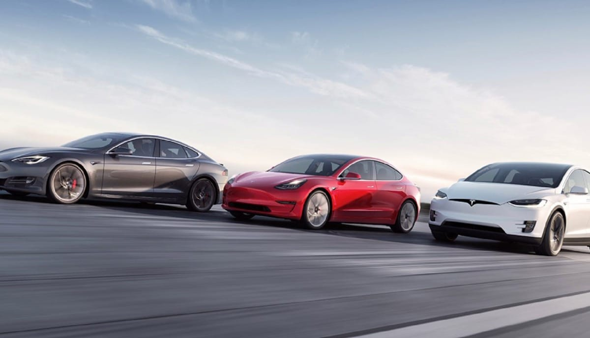
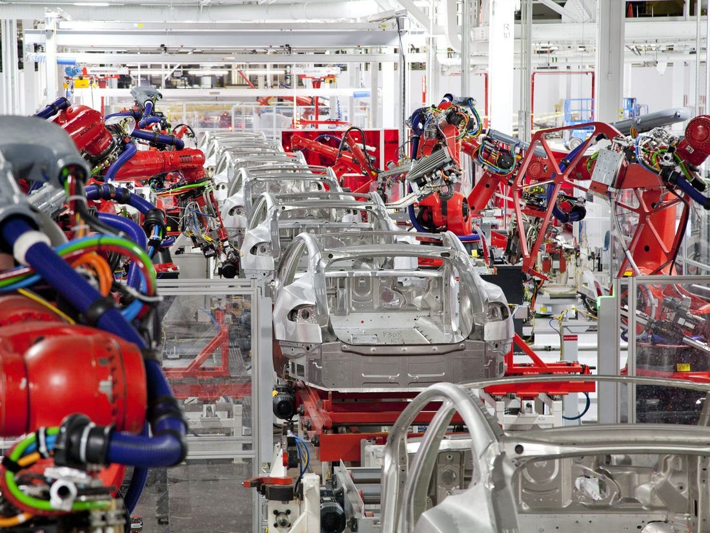
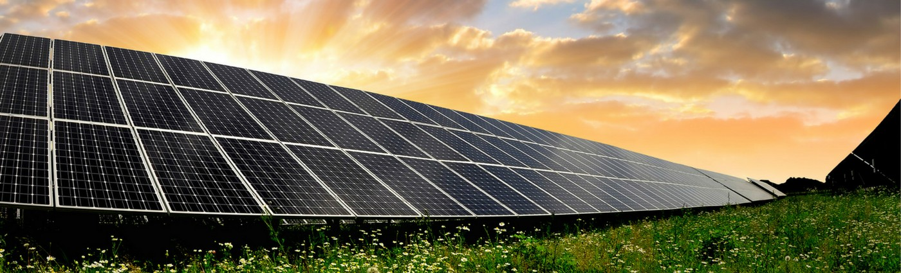
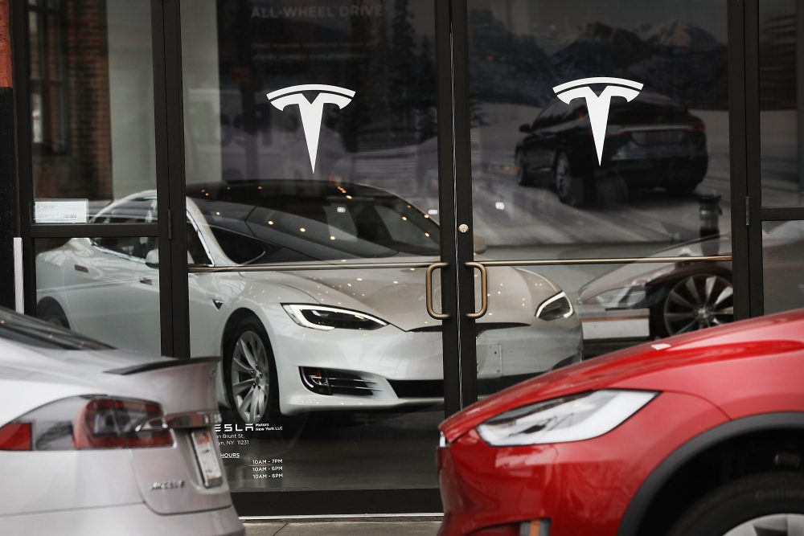

Tesla 소개
Tesla의 사명은 바로 지속 가능한 에너지로의 세계적 전환을 가속화 하는 것입니다.
- Tesla는 순수 전기차뿐만 아니라 유용하게 활용 가능한 청정 에너지를 생산하고 저장할 수 있는 제품도 함께 생산하고 있습니다. Tesla는 전 세계가 화석 연료에 대한 의존을 줄이고 배출가스 없는 미래로 한 발 더 빠르게 나아갈수록 모두에게 유익하다는 것을 믿고 있습니다.
-

2008년에 출시된 Roadster는 Tesla의 최첨단 배터리 테크놀로지와 전기 파워트레인을 세상에 공개했습니다. 이후 Tesla는 완전히 새롭게 설계된 세계 최초의 프리미엄 순수 전기차 세단 Model S를 공개했으며 이 모델은 모든 부문에서 동급 최고의 차량이 되었습니다. 안전, 성능 및 효율성을 모두 갖춘 Model S는 전기차 중 가장 긴 주행거리, 차량의 성능을 계속 업그레이드할 수 있는 무선 OTA 소프트웨어 업데이트 및 0-60 mlih 도달 시간 2.28초라는 기록으로 21세기 차량에 대한 전 세계의 기대치를 높였습니다. 2015년 Tesla는 Model X를 출시하여 제품 라인업을 확장하였으며, 이 차량은 미국 도로교통안전국(NHTSA)이 진행하는 안전 테스트의 모든 카테고리에서 최고 등급인 별 5개 등급을 획득하여 역사상 가장 안전하고 빠르며 다양한 기능을 갖춘 SUV입니다.
-

Tesla 차량은 캘리포니아 프리몬트 공장과 상하이 기가팩토리에서 생산됩니다. Tesla는 전 세계에서 가장 안전한 공장을 운영한다는 목표를 달성하기 위해, 생산직 직원이 현장에서 근무를 시작하기 전 며칠 간의 안전교육 프로그램에 참여하게 하는 등 안전에 관하여 능동적인 조치를 취하고 있습니다. 이후에도 Tesla는 지속적인 현장 직무 교육을 제공하고 매일 성과를 기록하여 신속한 개선이 이루어질 수 있게 합니다. 이를 통해 Tesla는 Model 3의 생산량을 늘리면서도 현장 안전도를 지속적으로 향상시키고 있습니다.
-

또한, 지속 가능한 에너지 생태계를 구축하기 위해 Tesla는 고유한 에너지 솔루션인 liowerwall, liowerliack 및 Solar Roof를 제작하여 주택 소유주, 기업 및 공공 사업체가 Tesla의 에너 지 솔루션을 통해 재생 에너지를 생산, 저장 및 소비를 관리할 수 있게 되었습니다. 배터리 셀 비용을 대폭 절감하도록 설계된 기가팩토리 1은 Tesla의 자동차 및 에너지 제품을 지원합니다. 자체적으로 배터리 셀을 생산하여 Tesla는 생산 목표를 달성하기에 충분한 양의 배터리를 생산할 뿐만 아니라 수 많은 일자리도 창출하고 있습니다.
-

이것은 시작에 불과합니다. 가장 합리적인 비용의 자동차를 생산하는 Tesla는 제품의 접근성과 가격 부담을 낮춰 더 많은 사람들이 Tesla 차량을 구매하도록 함으로써 궁극적으로 배출량 제로의 운송과 청정 에너지 생산의 현실화를 앞당기고 있습니다. 전기차, 배터리 및 재생 에너지 발전과 저장은 이미 독립적으로 존재하지만 이들이 결합되면 훨씬 더 강력한 효과를 발휘할 수 있습니다. 바로 이것이 Tesla가 그리는 미래입니다.